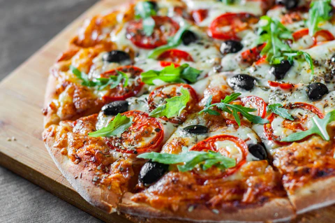

ABOUT MILAN PIZZA
It is one famous pizza born in the city of Milano,Italy.
Maybe the least known among typical Italian pizza styles,
the Milan-style pizza is a “newer”version created in
the 1950s.
It is thick and fluffy,like focaccia, even though
it only needs to rise for one hour.

How to make milan pizza
~Ingredients
- PLain Flour
- Self-Raising Flour
- Salt
- Dry Mustard
- Cayenne Pepper
- Butter
- Egg
- Milk
Filling
- Olive Oil
- Finemy Minced Meat
- Coarsely Chopped Tomatoes
- Anchovies
- Finely Chopped Onions
- 1 Garlic Clove
- Celery
- Persley
- Grated Cheese of choice
Method of Preparation
- Preheat oven to 375 degrees
- In a bowl,sift the flours,salt,mustard and cayenne
- In a differnt bowl,beat the eggs and milk together
- Stir the mixtures together
- Knead the dough on a floured surface then press the dough into a pizza plate
- Saute the minced meat in oil then let cook
- In a bowl,combine the minced meat,cheese,tomatoes,anchovies,onion,garlic,
celery,and persley
Meat + Dough
- Spread meat mixture evenly over dough
- Bake in the preheated oven for 20 - 25 minutes or until crust is brown